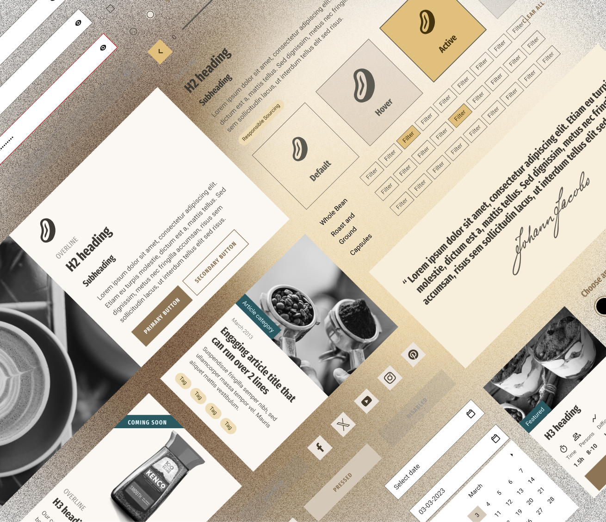
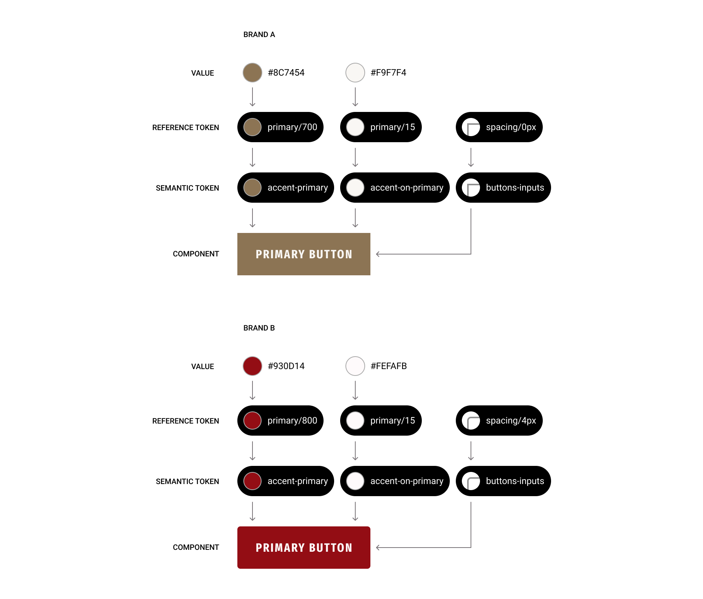
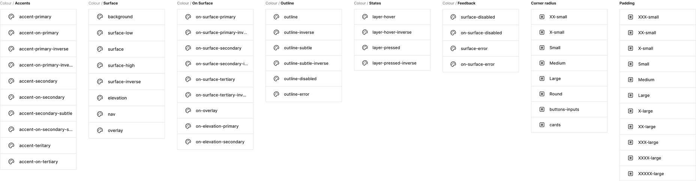
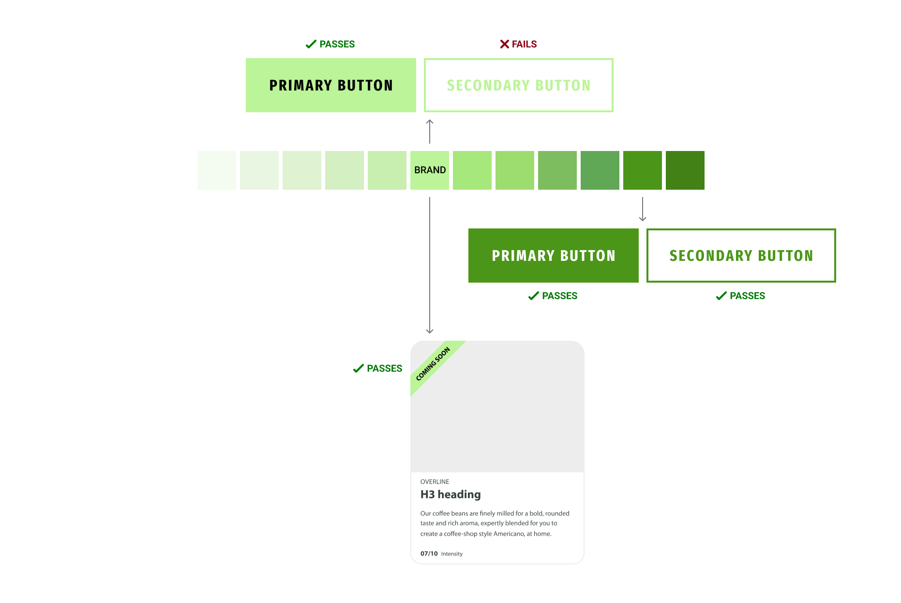
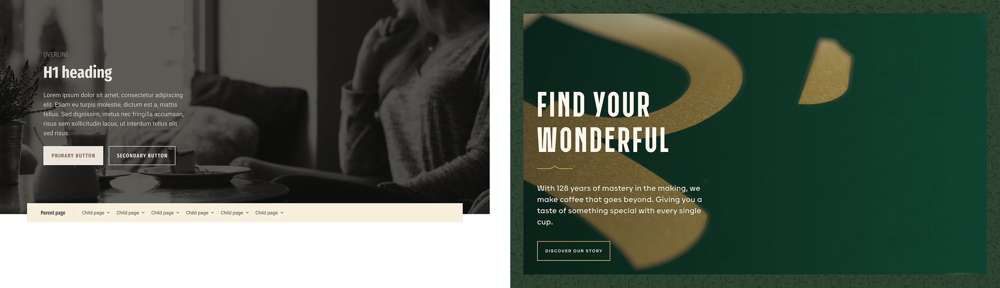
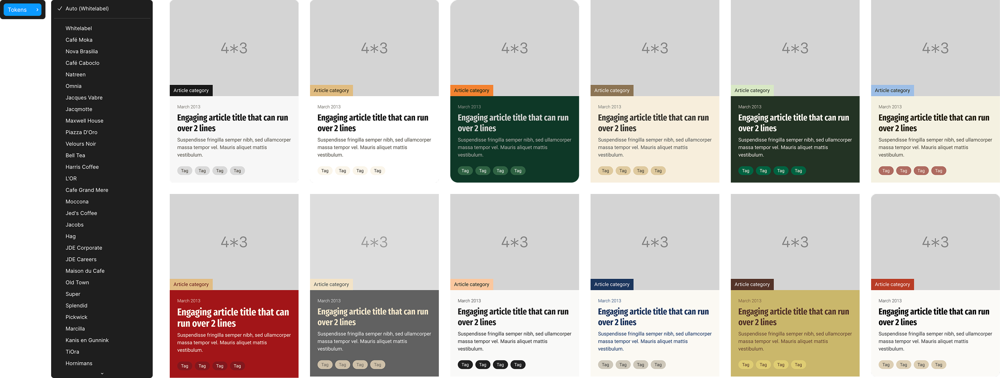
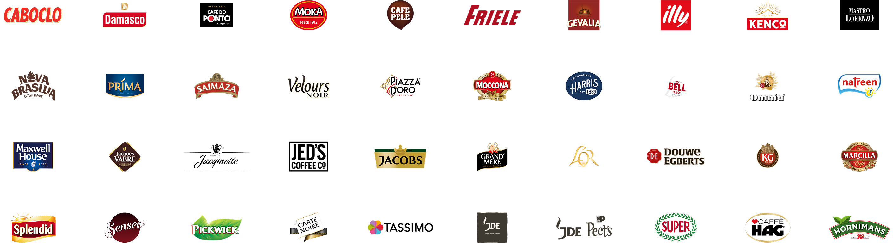

JACOBS DOUWE EGBERTS
With a growing portfolio of coffee brands around the world, Jacobs Douwe Egberts (JDE) needed a scalable design system to unify their digital presence. The challenge? Many of their brands lacked formal design guidelines, leading to inconsistent and inefficient workflows and branding.
- Design system architecture
- Component library & tokens
- Interaction & motion design
- Accessibility & performance
- Front-end implementation
- 2024

Using Tokens to lay the groundwork
We began with a deep audit of JDE's current design system to understand what existed, what could be reused, and which gaps remained.
From there, we set up a shared token structure that allowed us to quickly update designs.


Organizing tokens in a way that's logical for developers, intuitive for designers, and scalable for the entire system.
Accessibility at the forefront
A main priority of the project was improving accessibility. Most brand books we received were designed for print, so their colours often failed digital accessibility standards.
To solve this, we used palette generators to build accessible colour sets based on each brand's primary colour. We worked closely with each brand team to ensure adjustments that improved proper contrast still followed their visual identity.
We still used the brand's primary colour in other ways: accents, highlights, or secondary moments.


Allowing flexibility beyond the white-label

Applying brand styles at scale

JDE's portfolio of brands
Impact
The system has been successfully adopted across 40+ brands, proving its flexibility and scalability while streamlining collaboration between design, development, and brand teams. Building a white-label design system is complex and requires a high level of abstraction—every decision must work globally across multiple brands. It also demands an upfront time investment to define a scalable foundation, but that investment pays off as more brands are onboarded.